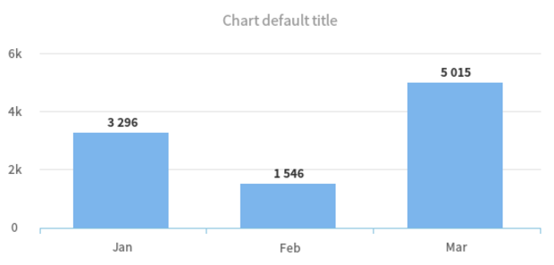
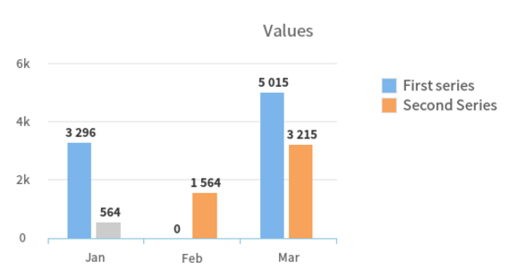

Beware
Failing to set a dataset key will result in a Libchart\Exception\DatasetNotDefinedException exception.
This is a PHP library that enables you to produce chart-like images. You simple create a new object of the chart class, set the dimensions and the chart dataset (and all the other available configurations, if needed) and a chart image is created. You can then display the image on the page or store it on a file.
Behind the curtain, the library calculates the dimensions of all the components (graph, axis, title, labels, columns / bars, lines / pie slices, etc) and assembles the final image.
To use this package on your project, you need to use Composer.
Once you have Composer, just add the package as a dependency, as follows:
"require": {
"luismarto/libchart": "2.*"
}To create a chart you need to use one of the following classes, based on the chart you want to produce. The class names are faily expressive.
<?php
use Libchart\Chart\Column;
use Libchart\Chart\Bar;
use Libchart\Chart\Line;
use Libchart\Chart\Pie;Then, you just need to create the chart with you options and render it, as such, which produces a chart like the image below
<?php
use Libchart\Chart\Column;
$chart = new Column([
'dataset' => [
'labels' => ['Jan', 'Feb', 'Mar'],
'data' => [3296, 1546, 5015]
]
]);
$chart->render();
The dataset parameter is required and represents the information you want to display on the chart. There are two formats for dataset, based on the information you want to display
Failing to set a dataset key will result in a Libchart\Exception\DatasetNotDefinedException exception.
If you want to display a single serie, you should set the 'dataset' key to an array of 'labels' and 'data'. Each element in 'data' can be either an integer (the value) or an array (the value and the color).
Make sure you use the same number of elements in labels and data.
The format for this dataset is as follows.
'dataset' => [
'labels' => ['Jan', 'Feb', 'Mar'],
'data' => [
3296,
[1546, '#F88C30'],
5015,
]
]The result of such dataset is similar to the example above.
Whenever you need to display multiple series in the same chart, you need to use another format for the dataset. Specifically, you should add a 'series' key, that must be an array with the series names.
As for the 'data' key, when using multiple series, you need to set it to an array of arrays.
'dataset' => [
'series' => ['First series', 'Second Series'],
'labels' => ['Jan', 'Feb', 'Mar'],
'data' => [
[
3296, 154, 5015
],
[
[564, '#cccccc'], 1564, 3215
],
],
]Similar to the single series data points can either be an integer or an array, with the first element as the value and the second as the color.

For obvious reasons, Pie charts don't support multiple series. So, when creating a Pie chart, be sure to set a single serie.
It's also a good time to tell you that, any negative point value on Pie charts will be treated as 0.
All the options are defined in config/config.php file. You can change the settings through the file but passing the settings when creating the chart is the preferred way.
The options are divided by components and are as follows
| Parent key | Option key | Description | Default value | Type |
|---|---|---|---|---|
| chart | width | Sets the width for the output area | 600 |
int |
| chart | height | Sets the height for the output area | 300 |
int |
| chart | logo |
Defines the file path for the logo if you intend to use one. Otherwise leave it as false. If you specify a path that's not valid, the logo won't be rendered. |
false |
string|bool |
| chart | bar-padding | Array with four positions at most, with integer values, that represent the top-padding, right-padding, bottom-padding and left-padding used for the chart. Use the key that matches the chart type you're creating. If you pass an array with less then four values, the remaining paddings will be 0. |
[5, 30, 30, 50] |
array |
| chart | column-padding | [5, 30, 50, 50] |
array | |
| chart | line-padding | [5, 30, 50, 50] |
array | |
| chart | pie-padding | [15, 10, 30, 30] |
array | |
| title | text | The description of the chart. You probably want to set this for each chart | Chart default title | string |
| title | font | Path for the font (odt or ttf) to be used on the title. You can either set this as the full path of the font file or simply set the font file name, if you want to use one of the SourceSans fonts (that are available on the fonts directory. |
SourceSansPro-Semibold.otf |
string |
| title | size | Sets the font size to be used for the title text | 12 |
int |
| title | color | Sets the color in which the title should be printed. Make sure you pass a valid hexadecimal color (with #) | #999999 |
string |
| title | height | Sets the height of the title component. The greater the value, the greater the distance between the title and the chart area. Note that the dimensions of the chart remain, so this results in the chart area to be smaller. |
26 |
int |
| title | padding | Besides the height, you can set the padding for the title component, just as you do with the chart. Like the chart padding, this accepts an array with four integer values for the top-padding, right-padding, bottom-padding and left-padding. |
[15, 0, 15, 0] |
array |
| axis-label | font | Path for the font (odt or ttf) to be used on the axis text. You can either set this as the full path of the font file or simply set the font file name, if you want to use one of the SourceSans fonts (that are available on the fonts directory. |
SourceSansPro-Regular.otf |
string |
| axis-label | size | Determines the font size for the text | 10 |
int |
| axis-label | color | Hexadecimal color for the axis labels | #666666 |
string |
| axis-label | angle | The angle for the text rotation. Set this to the number of degrees you want to rotate the text. Accepts both positive and negative values. | 0 |
int |
| axis-label | margin | Array with 'top' and 'left' key. Both keys should be set to an integer value that represents the top and left padding. |
[ 'top' => 15, 'left' => 0] |
array |
| axis-label | generator | A full qualified class name responsible for formatting the value axis. If you want to display the value in a different format, use one of the available label generators or create your custom class that implements \Libchart\Label\LabelInterface. |
\Libchart\Label\Short |
string |
| point-label | show | Boolean value that indicates if the point label should be displayed. If set to false, all the remaining settings are discarded. | true |
bool |
| point-label | font | Path for the font (odt or ttf) to be used on the point label. You can either set this as the full path of the font file or simply set the font file name, if you want to use one of the SourceSans fonts (that are available on the fonts directory. |
SourceSansPro-Semibold.otf |
string |
| point-label | size | The size for the label | 10 |
int |
| point-label | color | Hexadecimal color used when printing the point label | #333333 |
string |
| point-label | angle | The angle for the label. Set this to an integer value to display the point label rotated. | 0 |
int |
| point-label | generator | A full qualified class name responsible for formatting the point value. If you want to display the value in a different format, use one of the available label generators or create your custom class that implements \Libchart\Label\LabelInterface |
\Libchart\Label\NumberFormatter |
string |
The axis or point values are always formatted according to a given Label generator. This enables you to display the value in a custom format, based on the information you want to print. Libchart has a set of pre-defined formatters you can use (see the list below), but you can also create your own Label formatter and use it.
| FQ Class Name | Description | Example |
|---|---|---|
| \Libchart\Label\DefaultLabel | The more basic formatter. Just recieve the value and print it as it is, without any formatting. | 100 => 100 30000 => 30000 |
| \Libchart\Label\Short | This formatter shortens the number. Instead of displaying the full number, displays a number and a letter for the power of the number. This is the default label formatter for the value axis. |
100 => 100 30000 => 30k 7000000 => 7M |
| \Libchart\Label\NumberFormatter | Similar to the DefaultLabel formatter, this one prints the numbers in a specific format. Specifically, a separator is added for the thousands and millions. |
100 => 100 30000 => 30 000 7000000 => 7 000 000 |
| \Libchart\Label\PercentageFormatter | Enables you to display percentage values, with decimals and the % symbol. |
2.54 => 2,54 % 26 => 26,00 % 100 => 100,00 % |
| \Libchart\Label\EurCurrencyFormatter | Uses the NumberFormatter and appends a € symbol at the end of the number. |
100 => 100 € 30000 => 30 000 € 7000000 => 7 000 000 € |
If you need a validator that doesn't yet exist, you can create your own Label Formatter class and use it on your chart.
Make sure your class implements \Libchart\Label\LabelInterface and then specify the full qualified class name on the chart settings (look for point-label.generator and axis-label.generator on the options section).
<?php
class ThousandLabelGenerator implements \Libchart\Label\LabelInterface
{
public function generateLabel($value)
{
return ((int)($value / 1000)) . "k";
}
}(new Line([
'axis-label' => [
'generator' => 'ThousandLabelGenerator'
],
'point-label' => [
'generator' => 'ThousandLabelGenerator'
],
'dataset' => [
'labels' => ['Jan', 'Feb', 'Mar'],
'data' => [
3296,
[1546, '#F88C30'],
-256,
]
]
]))->render();The only available public method is render(); which renders the chart. The method accepts an optional argument for the file path.
If no argument is specified, the image is created and displayed on the browser. Otherwise, an image is created on the specified file path.
Along the process some exceptions might be throwed if the data ins't on the expected format. Below you can check the list of existing exceptions and why they are throwed
| Exception | Description |
|---|---|
| \Libchart\Exception\DatasetNotDefinedException | This exception is throwed when you fail to set a 'dataset' key array that's passed to the chart constructor. Make sure you take a look at the dataset option. |
| \Libchart\Exception\LogoFileNotFoundException | If you setted a logo on the configuration and the logo cannot be found, this exception is throwed. |
| \Libchart\Exception\PointsInSeriesDontMatchException | This exception might occur when you're creating a multiple series chart. Make sure each array in 'dataset.data' has the exact same number of points. If you have a series that has 5 points and another with 3 points, this exception will be throwed. |